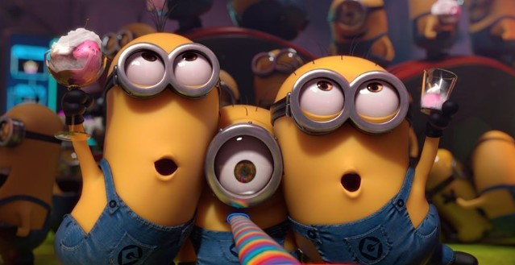
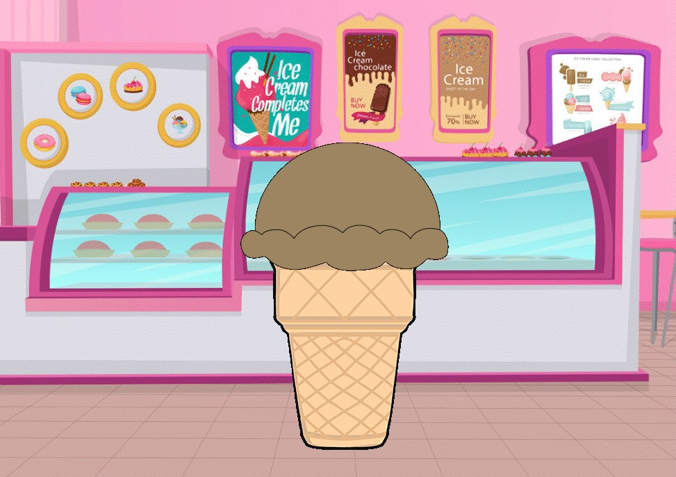
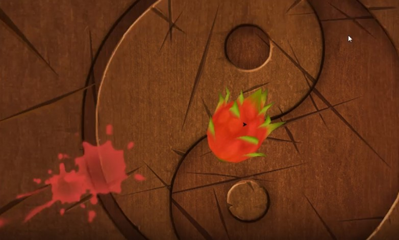

Home
Portfolio
About Me
This is my Portfolio Page

1.1.9 Project.

This is a ice cream simulator which creates your dream ice cream. The code, once run asks a series of questions
like container type and flavor and amount of scoops in order to create something delicious.
1.2.5 Project

This game mimics and has similiar features to the video game of Fruit Ninja. Fruits will fall from the sky and your job
is to click as many fruits as possible before the time runs out. Have Fun!
Interactive Fiction Rags to Riches.
Black Jack game written in Python.
Modified bits in pictures.
Use data files to create graphs.
Using netlogo do remix of illusions.
Interactive Fiction Rags to Riches.